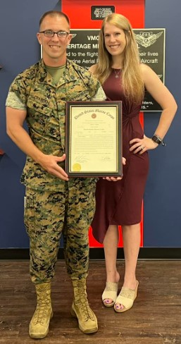

A little about me.
I am 34 years old and grew up moving about every 3 years due to being a
military family. I joined the Marine Corps in 2010 following my familys footsteps and have loved every
minute of it. I have been to over 30 different countries in the 16 years I have been in. I met my wife in
2016 and we have been married for almost 9 years. We have 2 dogs one is a dalmation and the other is a
border collie.
